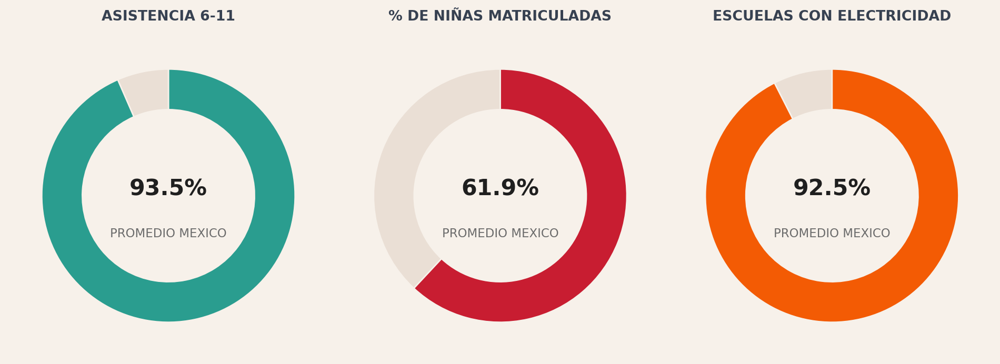
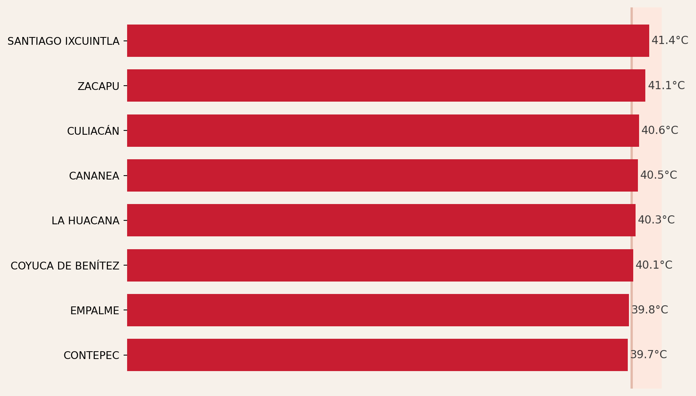
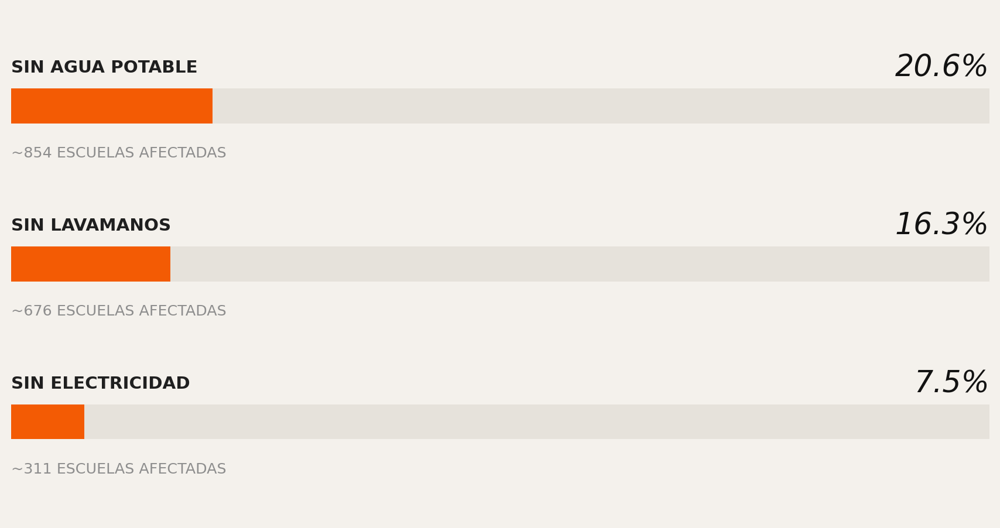
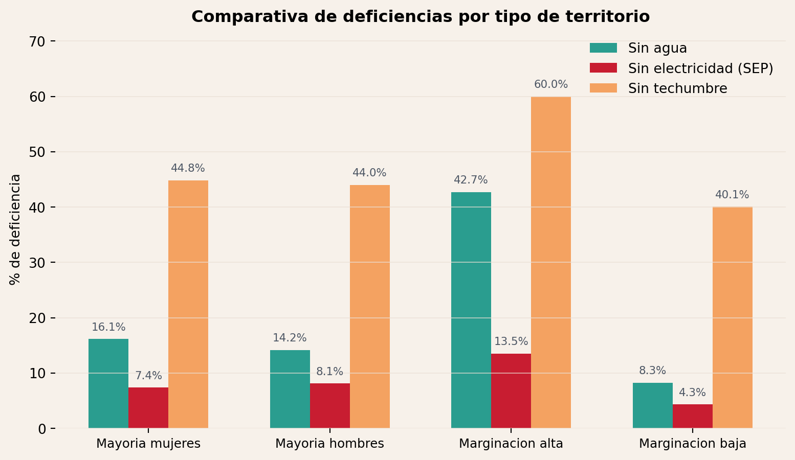
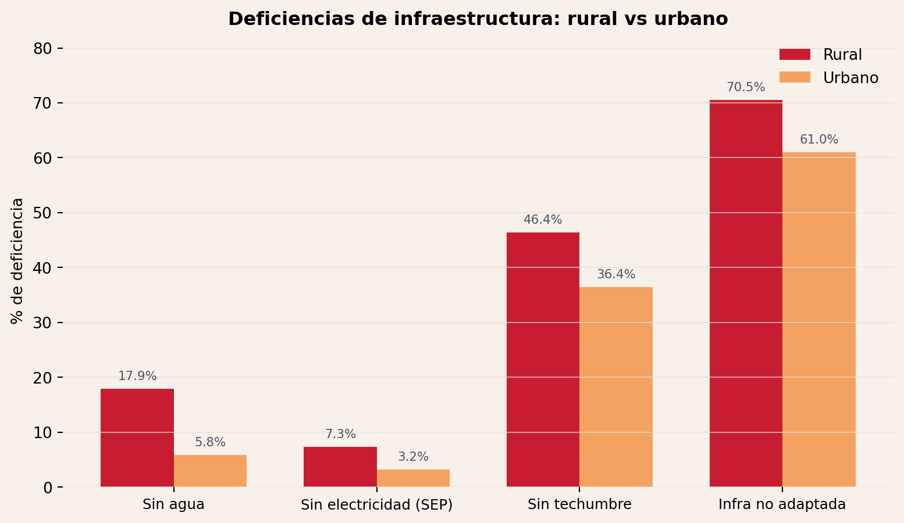
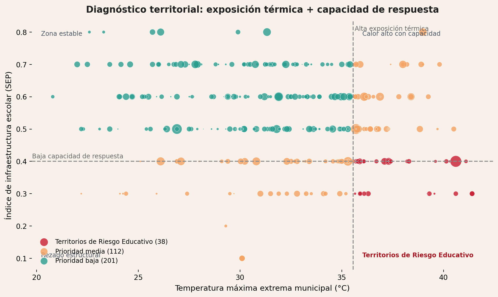
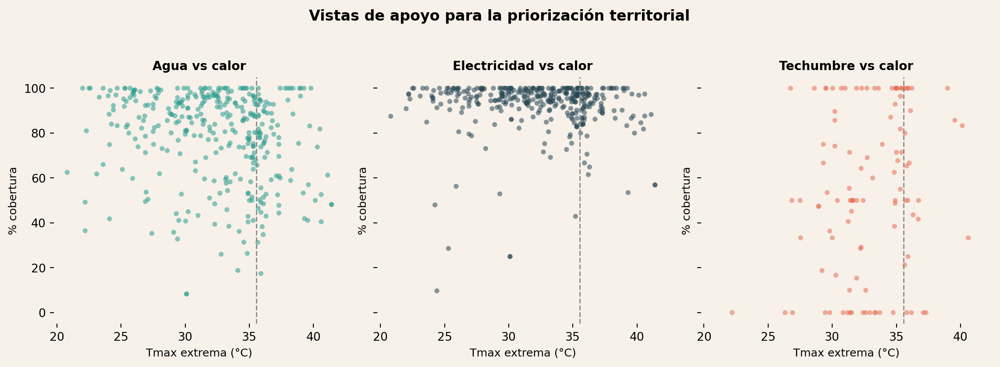
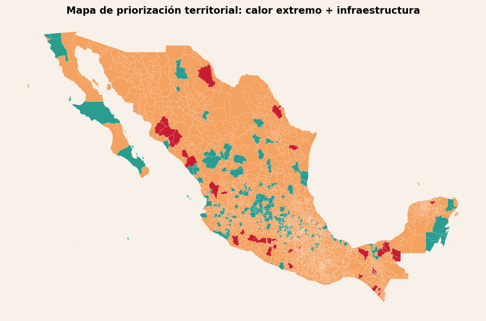

HackODS
DIAGNOSTICO ESTRATEGICO | HACKODS UNAM 2026
Cuando el calor entra al aula, la desigualdad también
Tablero de alerta territorial para proteger el ODS 4 frente al cambio climatico.
Crecer no siempre significa estar preparados
Durante años, la política educativa se ha enfocado en lograr que más estudiantes lleguen a la escuela. El avance del ODS 4 es innegable.
Pero, también ha mejorado la infraestructura que soporta esta educación?
En agosto de 2025, Mexicali registró un récord histórico de temperaturas históricas, alcanzado los 45.2°C. No es un caso aislado, varias aulas educativas en México operan bajo temperaturas máximas de más de 40°C en México en los meses más calurosos.

Dato: ranking descendente de municipios con temperatura pico municipal promedio, sin valores repetidos. Referencia: +40°C = riesgo extremo.
Aunque México ha expandido el acceso (ODS 4), más de una de cada cinco escuelas carece de agua potable para enfrentar olas de calor (ODS 4.a).

No es solo falta de infraestructura. Es falta de condiciones para enfrentar el calor.
El calor no afecta igual a todos
No todas las escuelas enfrentan la misma exposición ni tienen la misma capacidad de respuesta. Las escuelas rurales y comunitarias concentran mayores carencias, convirtiendo al riesgo en un tema de desigualdad territorial.
EL HALLAZGO
“El problema no es dónde hace más calor.
Es dónde hace calor y no hay cómo enfrentarlo.”


La vulnerabilidad de escuelas al cambio climático coincide con rezagos de infraestructura y vulnerabilidad territorial.
2. CONFORT TERMICO - El cuerpo en el aula
La evidencia fisiologica muestra que el calor puede convertirse en una barrera biologica para el aprendizaje1.
Limites de operacion biologica
19.7C - 27.7C
ZONA DE CONFORT
El cerebro procesa informacion sin estres.
+27.8C
UMBRAL CRITICO
El cuerpo detiene el aprendizaje para enfocarse en sobrevivir al calor.
Consecuencias del estres termico en aula
50%
Alumnos con incomodidad física inmediata.
45%
Senalan el calor como el principal obstaculo cognitivo.
SUDORACION
Agota reservas de energia vitales para concentrarse.
BAJA OXIGENACION
El flujo sanguineo va a la piel, restando oxigeno al cerebro.
Contexto nacional
En zonas con alta humedad (costas y sur), el estres termico impacta antes y agrava el riesgo para salud y aprendizaje.
3. TABLERO DE ALERTA TERRITORIAL
El riesgo no depende solo de la temperatura, sino de la capacidad de respuesta de los planteles. Este tablero cruza el clima extremo con el rezago en infraestructura para identificar dónde el calor se convierte en una barrera educativa. El problema no es solo dónde hace más calor; es dónde hace calor y no hay cómo enfrentarlo.

Esta gráfica principal cruza la temperatura máxima extrema con la capacidad de respuesta escolar. Los puntos rojos concentran municipios donde coinciden alta exposición térmica y rezago de infraestructura, es decir, los casos con mayor prioridad de intervención.

Estas vistas secundarias ayudan a entender qué servicio está más comprometido frente al calor. A mayor temperatura y menor cobertura de agua, electricidad o techumbre, mayor fragilidad operativa de las escuelas.

Este mapa no busca ser una verdad absoluta del confort térmico. Funciona como una herramienta de priorización territorial para orientar dónde revisar primero condiciones escolares frente al calor extremo.
Interpretación de Niveles de Riesgo
- Riesgo Crítico (Rojo): Municipios con temperaturas extremas y carencia total de servicios básicos.
- Riesgo Alto (Naranja): Alta exposición térmica y deficiencias en infraestructura de hidratación.
- Riesgo Medio (Amarillo): Temperaturas elevadas con mayor capacidad de respuesta institucional.
| Rank | Municipio | Estado | Temperatura maxima extrema (°C) | Indice de priorizacion |
|---|---|---|---|---|
| 1 | SANTIAGO IXCUINTLA | Nayarit | 41.400000 | 88.6 |
| 2 | SANTIAGO IXCUINTLA | Nayarit | 41.400000 | 88.6 |
| 3 | ZIHUATANEJO DE AZUETA | Guerrero | 40.600000 | 86.2 |
| 4 | ATOYAC DE ÁLVAREZ | Guerrero | 39.600000 | 83.2 |
| 5 | SAN JULIÁN | Jalisco | 39.300000 | 82.5 |
| 6 | TANHUATO | Michoacan | 39.200000 | 82.2 |
| 7 | ZACAPU | Michoacan | 41.100000 | 82.0 |
| 8 | CULIACÁN | Sinaloa | 40.600000 | 80.5 |
| 9 | LA HUACANA | Michoacan | 40.300000 | 79.7 |
| 10 | COYUCA DE BENÍTEZ | Guerrero | 40.100000 | 79.2 |
Municipios Gemelos?
Dos municipios con temperatura parecida pueden tener riesgos distintos según sus servicios básicos escolares.
TLAQUILTENANGO (Morelos)
20.8°C
Identificada como: Bajo riesgo
- Agua potable: 62.5%
- Electricidad: 87.5%
- Techumbre: s/d
- Infraestructura adaptada: 37.5%
SANTIAGO IXCUINTLA (Nayarit)
41.4°C
Identificada como: Alto riesgo
- Agua potable: 48.2%
- Electricidad: 56.9%
- Techumbre: s/d
- Infraestructura adaptada: 4.7%
Visibilizar lo que es invisible
Una alerta temprana frente a una nueva forma de exclusión educativa.
¿Dónde mirar primero?
URGENCIA
Municipios con alta exposicion térmica y baja capacidad de respuesta.
¿Qué necesita cambiar?
INTERVENCION
Agua, ventilación, sombra y adecuación climatica.
¿Cómo medir avance?
INDICADOR
Porcentaje de escuelas con condiciones de confort termico.
“México ya logró que millones de estudiantes lleguen a la escuela. El siguiente paso es asegurar que puedan aprender dentro de ella.”
PORQUE HOY, EL DERECHO A APRENDER TODAVIA DEPENDE DEL CLIMA.
Sobre los datos
Fuentes y Cobertura
- Educacion e Infraestructura (2023-2024): SEP - Direccion General de Planeacion, Programacion y Estadistica Educativa (DGPPyEE). Datos a nivel plantel.
- Matricula y Centros de Trabajo (Ciclo 2024-2025): Sistema de Estadisticas Continuas (Formato 911), SEP.
- Climatologia (Historico 2019-2024): CONAGUA (Servicio Meteorologico Nacional), CONABIO e INEGI.
- Infraestructura Fisica (Actualizacion 2024): SIGED (INIFED) para indicadores de techumbres, bebederos y materialidad.
- Referencia Cientifica: SciELO México. Fundamentacion para habitabilidad y confort termico escolar.
Metodologia y Limitaciones
- Interoperabilidad: Integracion nacional mediante Clave Geoelectoral Municipal (CVEGEO) a 5 dígitos como llave primaria.
- Cobertura Territorial: Alcance nacional con desagregacion a nivel municipal y por tipo de centro de trabajo.
- Limitaciones: Los indicadores de infraestructura dependen del ultimo ciclo de carga del Formato 911. Se reconoce un subregistro potencial en planteles de comunidades indígenas de alta dispersion geográfica o zonas con reporte administrativo incompleto.
- Consulta: Datasets procesados íntegramente el 14 de abril de 2026.
Footnotes
De la Cruz-Chaidez, M. T., et al. (2022). Evaluacion del confort termico y luminico en aulas universitarias. RECIT. https://doi.org/10.37636/recit.v5n4e233↩︎